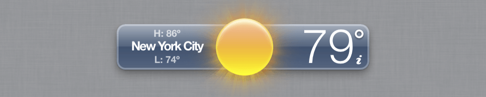

Jonathan’s Nifty Website
A humble internet abode

Hi there, my name’s Jonathan! I live in New York City, and I work at a web design agency called Ideas On Purpose. I conduct requirements analysis, plan information architecture, lead quality assurance, assist with project management, and help write code.
Outside of IOP, I teach programming at Girls Who Code and the Johns Hopkins’ Center for Talented Youth.
You can see my resumé here, if that’s the sort of thing you're into. Otherwise, keep reading to learn about other things I've done in my spare time.
Things I’ve Made

A full-text RSS reader for the Pebble smartchwatch
I wanted a way to read news articles on my wrist. Unable to find a working app for my smartwatch, I made my own instead.
A fixed weather widget for the old OS X Dashboard
The weather Dashboard widget that ships with Mac OS X 10.4 – 10.14 broke in 2019, when the service it uses went offline. I rewrote a portion of the code to bring it back to life.
Mac Quick Actions
A set of useful little Quick Actions for your Mac. Quickly make empty files in any folder, create DMGs, and more.